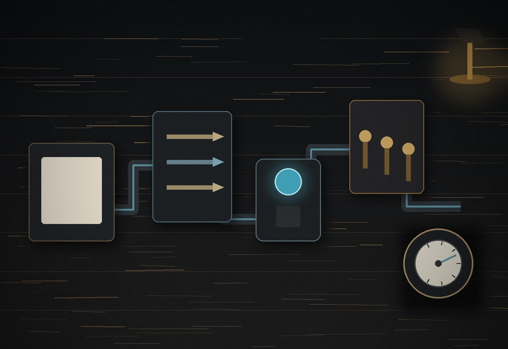

Where growth usually leaks
Systems
One operating
model for clearer
growth.
A growth system connects attention, conversion, follow-up, and measurement so the business can improve without depending on scattered tools or memory.
Traffic arrives
The wrong page, unclear offer, or weak relevance.
Forms collect too little
Important context is missing before follow-up begins.
Follow-up depends on memory
Leads cool while ownership or next steps stay unclear.
Tracking is disconnected
Decisions are made from impressions instead of outcomes.
System rules we build around
Useful systems are simple enough to operate.
Every action earns its place
Tools, forms, pages, and automations must serve a real business step.
Every page has one job
The next action should be clear before more features are added.
Every handoff has ownership
Lead routing and internal responsibility should not depend on memory.
Data becomes a decision
Measurement should change what the business does next.
01 Attract
Bring the right people to the right offer.
Search intent before traffic volume.
We align website structure, local SEO, Google Ads, service-area relevance, and content around the searches most likely to become real opportunities.
- Technical and local SEO foundations
- Keyword and search-intent mapping
- Google Ads campaign structure
- Relevant service and landing pages
02 Capture
Ask for enough information to act.
Forms should improve the next conversation.
Clear calls to action, useful intake questions, consent language, and responsive form design help the business understand the request before follow-up begins.
03 Convert
Remove hesitation from the decision.
Trust and clarity do more than visual polish.
Fast mobile pages, direct service explanations, proof, local relevance, and a clear path to contact make the business easier to choose.
04 Route
Put each inquiry in the right hands.
Ownership should be visible.
Internal notifications, lead categories, source context, and CRM-compatible routing reduce the chance that opportunities disappear between tools or team members.
05 Follow up
Make the next step dependable.
Automation supports the human conversation.
Confirmation messages, reminders, task creation, and workflow triggers can reduce repetitive admin without pretending every relationship should be automated.
06 Measure
Turn activity into useful decisions.
Track outcomes, not decoration.
GA4, Google Tag Manager, conversion events, call clicks, form submissions, Search Console, and source tracking create the evidence needed to improve the system.

Field example
A service lead moves through one connected path.
A prospect finds the right page, submits useful context, receives confirmation, reaches the correct person, and appears in measurement with its source attached.
Observe
Find where the current path leaks.
Alter
Change the smallest useful piece.
Measure
Watch the outcome, not assumptions.
Repeat
Improve the system without rebuilding everything.
Ready to connect the pieces?
Bring us the current workflow, website, or lead path. We will map the operating model around the real bottleneck.
Start a Project →